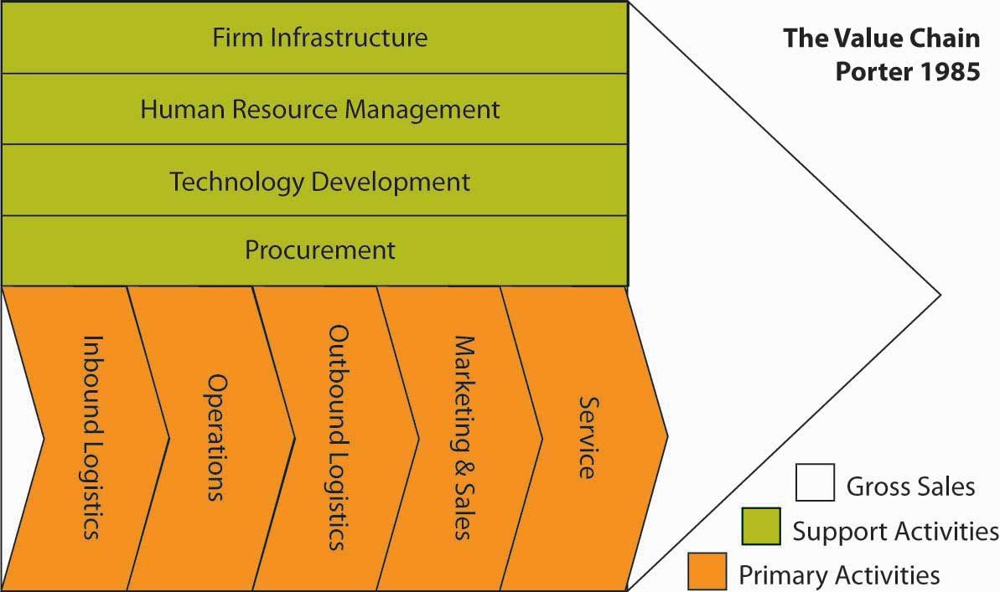
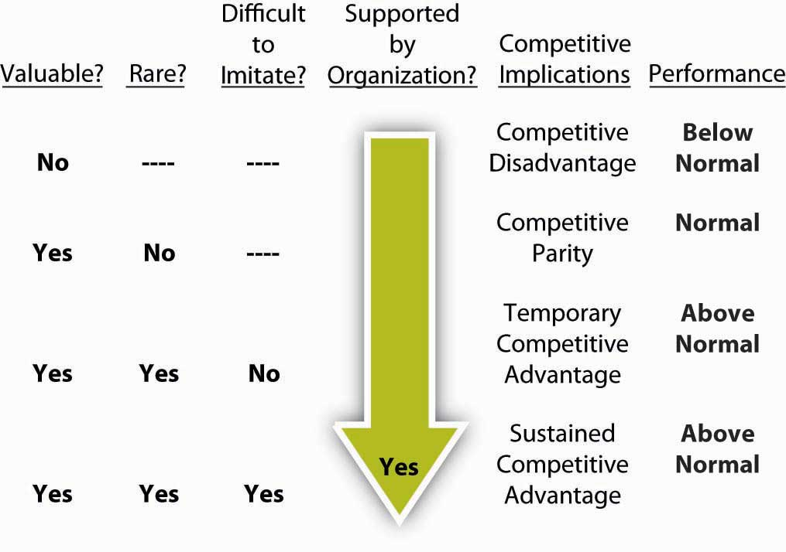

In this section, you will learn about some of the basic internal inputs for strategy formulation—starting with the organization’s strengths and weaknesses. We will focus on three aspects of internal analysis here, though you recognize that these should be complemented by external analysis as well. There is no correct order in which to do internal and external analyses, and the process is likely to be iterative. That is, you might do some internal analysis that suggests the need for other external analysis, or vice versa. For the internal environment, it is best to start with an assessment of resources and capabilities and then work your way into the identification of core competences using VRIO analysis.
By exploiting internal resources and capabilities and meeting the demanding standards of global competition, firms create value for customers.McEvily, S. K., & Chakravarthy, B. (2002). The persistence of knowledge-based advantage: An empirical test for product performance and technological knowledge. Strategic Management Journal, 23, 285–305; Buckley, P. J., & Carter, M. J. (2000). Knowledge management in global technology markets: Applying theory to practice. Long Range Planning, 33(1), 55–71. Value is measured by a product’s performance characteristics and by its attributes for which customers are willing to pay.Pocket Strategy. (1998). Value (p. 165). London: The Economist Books. Those particular bundles of resources and capabilities that provide unique advantages to the firm are considered core competenciesA particular bundle of resources and capabilities that provides unique competitive advantages to the firm..Prahalad, C. K., and Hamel, G. (1990). The core competence of the organization. Harvard Business Review, 90, 79–93. Core competencies are resources and capabilities that serve as a source of a firm’s competitive advantage over rivals. Core competencies distinguish a company competitively and reflect its personality. Core competencies emerge over time through an organizational process of accumulating and learning how to deploy different resources and capabilities. As the capacity to take action, core competencies are “crown jewels of a company,” the activities the company performs especially well compared with competitors and through which the firm adds unique value to its goods or services over a long period of time.Hafeez, K., Zhang, Y. B., & Malak, N. (2002). Core competence for sustainable competitive advantage: A structured methodology for identifying core competence. IEEE Transactions on Engineering Management, 49(1), 28–35; Prahalad, C. K., & Hamel, G. (1990). The core competence of the corporation. Harvard Business Review, 68(3), 79–93.
Sometimes consistency and predictability provide value to customers, such as the type of value Walgreens drugstores provides. As a Fortune magazine writer noted, “Do you realize that from 1975 to today, Walgreens beat Intel? It beat Intel nearly two to one, GE almost five to one. It beat 3M, Coke, Boeing, Motorola.”Useem, J. (2001, February 19). Most admired: Conquering vertical limits. Fortune, pp. 84–96. Walgreens was able to do this by using its core competencies to offer value desired by its target customer group. Instead of responding to the trends of the day, “During the Internet scare of 1998 and 1999, when slogans of ‘Change or Die!’ were all but graffitied on the subway, Walgreens obstinately stuck to its corporate credo of ‘Crawl, walk, run.’ Its refusal to act until it thoroughly understood the implications of e-commerce was deeply unfashionable, but…Walgreens is the epitome of the inner-directed company.”Useem, J. (2001, February 19). Most admired: Conquering vertical limits. Fortune, pp. 84–96. Thus, Walgreens creates value by focusing on the unique capabilities it has built, nurtured, and continues to improve across time.
During the past several decades, the strategic management process was concerned largely with understanding the characteristics of the industry in which the firm competed and, in light of those characteristics, determining how the firm should position itself relative to competitors. This emphasis on industry characteristics and competitive strategy may have understated the role of the firm’s resources and capabilities in developing competitive advantage. In the current competitive landscape, core competencies, in combination with product-market positions, are the firm’s most important sources of competitive advantage.Hitt, M. A., Nixon, R. D., Clifford, P. G., & Coyne, K. P. (1999). The development and use of strategic resources. In M. A. Hitt, P. G. Clifford, R. D. Nixon, & K. P. Coyne (Eds.), Dynamic Strategic Resources (pp. 1–14). Chichester: Wiley. The core competencies of a firm, in addition to its analysis of its general, industry, and competitor environments, should drive its selection of strategies. As Clayton Christensen noted, “Successful strategists need to cultivate a deep understanding of the processes of competition and progress and of the factors that undergird each advantage. Only thus will they be able to see when old advantages are poised to disappear and how new advantages can be built in their stead.”Christensen, C. M. (2001). The past and future of competitive advantage. Sloan Management Review, 42(2), 105–109. By drawing on internal analysis and emphasizing core competencies when formulating strategies, companies learn to compete primarily on the basis of firm-specific differences, but they must be aware of how things are changing as well.
Broad in scope, resources cover a spectrum of individual, social, and organizational phenomena.Eisenhardt, K., & Martin, J. (2000). Dynamic capabilities: What are they? Strategic Management Journal, 21, 1105–1121; Michalisin, M. D., Kline, D. M., & Smith. R. D. (2000). Intangible strategic assets and firm performance: A multi-industry study of the resource-based view, Journal of Business Strategies, 17(2), 91–117. Typically, resources alone do not yield a competitive advantage.West, G. P., & DeCastro, J. (2001). The Achilles heel of firm strategy: Resource weaknesses and distinctive inadequacies. Journal of Management Studies, 38(3), 26–45.; Deeds, D. L., DeCarolis, D., & J. Coombs. (2000). Dynamic capabilities and new product development in high technology ventures: An empirical analysis of new biotechnology firms. Journal of Business Venturing, 15, 211–229; Chi, T. (1994). Trading in strategic resources: Necessary conditions, transaction cost problems, and choice of exchange structure. Strategic Management Journal, 15, 271–290. In fact, the core competencies that yield a competitive advantage are created through the unique bundling of several resources.Berman, S., Down, J., & Hill, C. (2002). Tacit knowledge as a source of competitive advantage in the National Basketball Association. Academy of Management Journal, 45, 13–31. For example, Amazon.com has combined service and distribution resources to develop its competitive advantages. The firm started as an online bookseller, directly shipping orders to customers. It quickly grew large and established a distribution network through which it could ship “millions of different items to millions of different customers.” Compared with Amazon’s use of combined resources, traditional bricks-and-mortar companies, such as Toys “R” Us and Borders, found it hard to establish an effective online presence. These difficulties led them to develop partnerships with Amazon. Through these arrangements, Amazon now handles online presence and the shipping of goods for several firms, including Toys “R” Us and Borders, which now can focus on sales in their stores. Arrangements such as these are useful to the bricks-and-mortar companies because they are not accustomed to shipping so much diverse merchandise directly to individuals.Shepard, S. (2001, April 30). Interview: “The company is not in the stock.” Business Week, pp. 94–96.
Some of a firm’s resources are tangible while others are intangible. Tangible resources are assets that can be seen and quantified. Production equipment, manufacturing plants, and formal reporting structures are examples of tangible resources. Intangible resources typically include assets that are rooted deeply in the firm’s history and have accumulated over time. Because they are embedded in unique patterns of routines, intangible resources are relatively difficult for competitors to analyze and imitate. Knowledge, trust between managers and employees, ideas, the capacity for innovation, managerial capabilities, organizational routines (the unique ways people work together), scientific capabilities, and the firm’s reputation for its goods or services and how it interacts with people (such as employees, customers, and suppliers) are all examples of intangible resources.Feldman, M. S. (2000). Organizational routines as a source of continuous change, Organization Science, 11, 611–629; Knott, A. M., & McKelvey, B. (1999). Nirvana efficiency: A comparative test of residual claims and routines. Journal of Economic Behavior & Organization, 38, 365–383. The four types of tangible resources are financial, organizational, physical, and technological. The three types of intangible resources are human, innovation, and reputational.
As a manager or entrepreneur, you will be challenged to understand fully the strategic value of your firm’s tangible and intangible resources. The strategic value of resources is indicated by the degree to which they can contribute to the development of core competencies, and, ultimately, competitive advantage. For example, as a tangible resource, a distribution facility is assigned a monetary value on the firm’s balance sheet. The real value of the facility, however, is grounded in a variety of factors, such as its proximity to raw materials and customers, but also in intangible factors such as the manner in which workers integrate their actions internally and with other stakeholders, such as suppliers and customers.Gavetti, G., & Levinthal, D. (2000). Looking forward and looking backward: Cognitive and experimental search. Administrative Science Quarterly, 45, 113–137; Coff, R. W. (1999). How buyers cope with uncertainty when acquiring firms in knowledge-intensive industries: Caveat emptor. Organization Science, 10, 144–161; Marsh, S. J., & Ranft, A. L. (1999). Why resources matter: An empirical study of knowledge-based resources on new market entry. In M. A. Hitt, P. G. Clifford, R. D. Nixon, & K. P. Coyne (Eds.), Dynamic strategic resources (pp. 43–66). Chichester: Wiley.
Capabilities are the firm’s capacity to deploy resources that have been purposely integrated to achieve a desired end state.Helfat, C. E., & Raubitschek, R. S. (2000). Product sequencing: Co-evolution of knowledge, capabilities, and products. Strategic Management Journal, 21, 961–979. The glue that holds an organization together, capabilities emerge over time through complex interactions among tangible and intangible resources. Capabilities can be tangible, like a business process that is automated, but most of them tend to be tacit and intangible. Critical to forming competitive advantages, capabilities are often based on developing, carrying, and exchanging information and knowledge through the firm’s human capital.Hitt, M. A., Bierman, L., Shimizu, K., & Kochhar, R. (2001) Direct and moderating effects of human capital on strategy and performance in professional service firms: A resource-based perspective. Academy of Management Journal, 44(1), 13–28; Hitt, M. A., Ireland, R. D., & Lee, H. (2000). Technological learning, knowledge management, firm growth and performance: An introductory essay. Journal of Engineering and Technology Management, 17, 231–246; Hoopes, D. G., & Postrel, S. (1999). Shared knowledge: “Glitches,” and product development performance. Strategic Management Journal, 20, 837–865; Quinn, J. B. (1994). The Intelligent Enterprise. New York: Free Press. Because a knowledge base is grounded in organizational actions that may not be explicitly understood by all employees, repetition and practice increase the value of a firm’s capabilities.
The foundation of many capabilities lies in the skills and knowledge of a firm’s employees and, often, their functional expertise. Hence, the value of human capital in developing and using capabilities and, ultimately, core competencies cannot be overstated. Firms committed to continuously developing their people’s capabilities seem to accept the adage that “the person who knows how will always have a job. The person who knows why will always be his boss.”Thoughts on the business of life. (1999, May 17). Forbes, p. 352.
Global business leaders increasingly support the view that the knowledge possessed by human capital is among the most significant of an organization’s capabilities and may ultimately be at the root of all competitive advantages. But firms must also be able to use the knowledge that they have and transfer it among their operating businesses.Argote, L., & Ingram, P. (2000). Knowledge transfer: A basis for competitive advantage in firms. Organizational Behavior and Human Decision Processes, 82, 150–169. For example, researchers have suggested that “in the information age, things are ancillary, knowledge is central. A company’s value derives not from things, but from knowledge, know-how, intellectual assets, competencies—all of it embedded in people.”Dess, G. G., & Picken, J. C. (1999). Beyond productivity. New York: AMACOM. Given this reality, the firm’s challenge is to create an environment that allows people to fit their individual pieces of knowledge together so that, collectively, employees possess as much organizational knowledge as possible.Coy, P. (2002, Spring). High turnover, high risk [Special Issue]. Business Week, p. 24.
To help them develop an environment in which knowledge is widely spread across all employees, some organizations have created the new upper-level managerial position of chief learning officer (CLO). Establishing a CLO position highlights a firm’s belief that “future success will depend on competencies that traditionally have not been actively managed or measured—including creativity and the speed with which new ideas are learned and shared.”Baldwin, T. T., & Danielson, C. C. (2000). Building a learning strategy at the top: Interviews with ten of America’s CLOs. Business Horizons, 43(6), 5–14. In general, the firm should manage knowledge in ways that will support its efforts to create value for customers.Kuratko, D. F., Ireland, R. D., & Hornsby, J. S. (2001). Improving firm performance through entrepreneurial actions: Acordia’s corporate entrepreneurship strategy. Academy of Management Executive, 15(4), 60–71; Hansen, M. T., Nhoria, N., & Tierney, T. (1999). What’s your strategy for managing knowledge? Harvard Business Review, 77(2), 106–116.
Figure 5.15 The Value Chain
Adapted from Porter, M. (1985). Competitive Advantage. New York: Free Press. Exhibit is creative commons licensed at http://en.wikipedia.org/wiki/Image:ValueChain.PNG.
Capabilities are often developed in specific functional areas (such as manufacturing, R&D, and marketing) or in a part of a functional area (for example, advertising). The value chainThe primary and support activities that an organization uses to create value in the form of products or services., popularized by Michael Porter’s book Competitive Advantage, is a useful tool for taking stock of organizational capabilities. A value chain is a chain of activities. In the value chain, some of the activities are deemed to be primary, in the sense that these activities add direct value. In the preceding figure, primary activities are logistics (inbound and outbound), marketing, and service. Support activities include how the firm is organized (infrastructure), human resources, technology, and procurement. Products pass through all activities of the chain in order, and at each activity, the product gains some value. A firm is effective to the extent that the chain of activities gives the products more added value than the sum of added values of all activities.
It is important not to mix the concept of the value chain with the costs occurring throughout the activities. A diamond cutter can be used as an example of the difference. The cutting activity may have a low cost, but the activity adds to much of the value of the end product, since a rough diamond is significantly less valuable than a cut, polished diamond. Research suggests a relationship between capabilities developed in particular functional areas and the firm’s financial performance at both the corporate and business-unit levels,Hitt, M. A., & Ireland, R. D. (1986). Relationships among corporate level distinctive competencies, diversification strategy, corporate structure, and performance. Journal of Management Studies, 23, 401–416; Hitt, M. A., & Ireland, R. D. (1985). Corporate distinctive competence, strategy, industry, and performance. Strategic Management Journal, 6, 273–293; Hitt, M. A., Ireland, R. D., & Palia, K. A. (1982). Industrial firms’ grand strategy and functional importance. Academy of Management Journal, 25, 265–298; Hitt, M. A., Ireland, R. D., & Stadter, G. (1982). Functional importance and company performance: Moderating effects of grand strategy and industry type. Strategic Management Journal, 3, 315–330; Snow, C. C., & Hrebiniak, E. G. (1980). Strategy, distinctive competence, and organizational performance. Administrative Science Quarterly, 25, 317–336. suggesting the need to develop capabilities at both levels.
Given that almost anything a firm possesses can be considered a resource or capability, how should you attempt to narrow down the ones that are core competencies, and explain why firm performance differs? To lead to a sustainable competitive advantage, a resource or capability should be valuable, rare, inimitable (including nonsubstitutable), and organized. This VRIO framework is the foundation for internal analysis.VRIO analysis is at the core of the resource-based view of the firm. Wernerfelt, B. (1984). A resource-based view of the firm. Strategic Management Journal, 5, 171–180. Barney, J. B. (1991). Firm resources and sustained competitive advantage. Journal of Management, 19, 99–120. VRIOStands for valuable, rare, inimitable, and organization. is an acronym for valuable, rare, inimitable, and organization.
If you ask managers why their firms do well while others do poorly, a common answer is likely to be “our people.” But this is really not an answer. It may be the start of an answer, but you need to probe more deeply—what is it about “our people” that is especially valuable? Why don’t competitors have similar people? Can’t competitors hire our people away? Or is it that there something special about the organization that brings out the best in people? These kinds of questions form the basis of VRIO and get to the heart of why some resources help firms more than others.
Figure 5.16 VRIO and Relative Firm Performance
Moreover, your ability to identify whether an organization has VRIO resources will also likely explain their competitive position. In the figure, you can see that a firm’s performance relative to industry peers is likely to vary according to the level to which resources, capabilities, and ultimately core competences satisfy VRIO criteria. The four criteria are explored next.
A resource or capability is said to be valuable if it allows the firm to exploit opportunities or negate threats in the environment. Union Pacific’s extensive network of rail-line property and equipment in the Gulf Coast of the United States is valuable because it allows the company to provide a cost-effective way to transport chemicals. Because the Gulf Coast is the gateway for the majority of chemical production in the United States, the rail network allows the firm to exploit a market opportunity. Delta’s control of the majority of gates at the Cincinnati / Northern Kentucky International Airport (CVG) gives it a significant advantage in many markets. Travelers worldwide have rated CVG one of the best airports for service and convenience 10 years running. The possession of this resource allows Delta to minimize the threat of competition in this city. Delta controls air travel in this desirable hub city, which means that this asset (resource) has significant value. If a resource does not allow a firm to minimize threats or exploit opportunities, it does not enhance the competitive position of the firm. In fact, some scholars suggest that owning resources that do not meet the VRIO test of value actually puts the firm at a competitive disadvantage.Barney, J. B. (1991). Firm resources and sustained competitive advantage. Journal of Management, 17, 99–120.
A resource is rare simply if it is not widely possessed by other competitors. Of the criteria this is probably the easiest to judge. For example, Coke’s brand name is valuable but most of Coke’s competitors (Pepsi, 7Up, RC) also have widely recognized brand names, making it not that rare. Of course, Coke’s brand may be the most recognized, but that makes it more valuable, not more rare, in this case.
A firm that possesses valuable resources that are not rare is not in a position of advantage relative to competitors. Rather, valuable resources that are commonly held by many competitors simply allow firms to be at par with competitors. However, when a firm maintains possession of valuable resources that are rare in the industry they are in a position of competitive advantage over firms that do not possess the resource. They may be able to exploit opportunities or negate threats in ways that those lacking the resource will not be able to do. Delta’s virtual control of air traffic through Cincinnati gives it a valuable and rare resource in that market.
How rare do the resources need to be for a firm to have a competitive advantage? In practice, this is a difficult question to answer unequivocally. At the two extremes (i.e., one firm possesses the resource or all firms possess it), the concept is intuitive. If only one firm possesses the resource, it has significant advantage over all other competitors. For instance, Monsanto had such an advantage for many years because they owned the patent to aspartame, the chemical compound in NutraSweet, they had a valuable and extremely rare resource. Because during the lifetime of the patent they were the only firm that could sell aspartame, they had an advantage in the artificial sweetener market. However, meeting the condition of rarity does not always require exclusive ownership. When only a few firms possess the resource, they will have an advantage over the remaining competitors. For instance, Toyota and Honda both have the capabilities to build cars of high quality at relatively low cost.Dyer, J. H., Kale, P., & Singh, H. (2004, July–August). When to ally and when to acquire. Harvard Business Review, 109–115. Their products regularly beat rival firms’ products in both short-term and long-term quality ratings.Dyer, J. H., & Hatch, N. (2004). Using Supplier Networks to Learn Faster. Sloan Management Review, 45(3), 57–63. Thus, the criterion of rarity requires that the resource not be widely possessed in the industry. It also suggests that the more exclusive a firm’s access to a particularly valuable resource, the greater the benefit for having it.
An inimitable (the opposite of imitable) resource is difficult to imitate or to create ready substitutes for. A resource is inimitable and nonsubstitutable if it is difficult for another firm to acquire it or to substitute something else in its place. A valuable and rare resource or capability will grant a competitive advantage as long as other firms do not gain subsequently possession of the resource or a close substitute. If a resource is valuable and rare and responsible for a market leader’s competitive advantage, it is likely that competitors lacking the resource or capability will do all that they can to obtain the resource or capability themselves. This leads us to the third criterion—inimitability. The concept of imitation includes any form of acquiring the lacking resource or substituting a similar resource that provides equivalent benefits. The criterion important to be addressed is whether competitors face a cost disadvantage in acquiring or substituting the resource that is lacking. There are numerous ways that firms may acquire resources or capabilities that they lack.
As strategy researcher Scott Gallagher notes:
“This is probably the toughest criterion to examine because given enough time and money almost any resource can be imitated. Even patents only last 17 years and can be invented around in even less time. Therefore, one way to think about this is to compare how long you think it will take for competitors to imitate or substitute something else for that resource and compare it to the useful life of the product. Another way to help determine if a resource is inimitable is why/how it came about. Inimitable resources are often a result of historical, ambiguous, or socially complex causes. For example, the U.S. Army paid for Coke to build bottling plants around the world during World War II. This is an example of history creating an inimitable asset. Generally, intangible (also called tacit) resources or capabilities, like corporate culture or reputation, are very hard to imitate and therefore inimitable.”Retrieved January 30, 2009, from http://falcon.jmu.edu/~gallagsr/WDFPD-Internal.pdf.
The fourth and final VRIO criterion that determines whether a resource or capability is the source of competitive advantage recognizes that mere possession or control is necessary but not sufficient to gain an advantage. The firm must likewise have the organizational capability to exploit the resources. The question of organization is broad and encompasses many facets of a firm but essentially means that the firm is able to capture any value that the resource or capability might generate. Organization, essentially the same form as that taken in the P-O-L-C framework, spans such firm characteristics as control systems, reporting relationships, compensation policies, and management interface with both customers and value-adding functions in the firm. Although listed as the last criterion in the VRIO tool, the question of organization is a necessary condition to be satisfied if a firm is to reap the benefits of any of the three preceding conditions. Thus, a valuable but widely held resource only leads to competitive parity for a firm if they also possess the capabilities to exploit the resource. Likewise, a firm that possesses a valuable and rare resource will not gain a competitive advantage unless it can actually put that resource to effective use.
Many firms have valuable and rare resources that they fail to exploit (the question of imitation is not relevant until the firm exploits valuable and rare resources). For instance, for many years Novell had a significant competitive advantage in computer networking based on its core NetWare product. In high-technology industries, remaining at the top requires continuous innovation. Novell’s decline during the mid- to late 1990s led many to speculate that Novell was unable to innovate in the face of changing markets and technology. However, shortly after new CEO Eric Schmidt arrived from Sun Microsystems to attempt to turnaround the firm, he arrived at a different conclusion. Schmidt commented: “I walk down Novell hallways and marvel at the incredible potential of innovation here. But, Novell has had a difficult time in the past turning innovation into products in the marketplace.”Personal communication with Margaret Haddox. (2003). Novell Corporate Librarian. He later commented to a few key executives that it appeared the company was suffering from “organizational constipation.”Personal communication with former executives. Novell appeared to still have innovative resources and capabilities, but they lacked the organizational capability (e.g., product development and marketing) to get those new products to market in a timely manner.
Likewise, Xerox proved unable to exploit its innovative resources. Xerox created a successful research team housed in a dedicated facility in Palo Alto, California, known as Xerox PARC. Scientists in this group invented an impressive list of innovative products, including laser printers, Ethernet, graphical interface software, computers, and the computer mouse. History has demonstrated that these technologies were commercially successful. Unfortunately, for Xerox shareholders, these commercially successful innovations were exploited by other firms. Xerox’s organization was not structured in a way that information about these innovations flowed to the right people in a timely fashion. Bureaucracy was also suffocating ideas once they were disseminated. Compensation policies did not reward managers for adopting these new innovations but rather rewarded current profits over long-term success. Thus, Xerox was never able exploit the innovative resources and capabilities embodied in their off-site Xerox PARC research center.Kearns, D. T., & Nadler, D. A. (1992). Prophets in the dark. New York: HarperColllins; Barney, J. B. (1995). Looking inside for competitive advantage. Academy of Management Executive, 9, 49–61.
As you already know, many scholars refer to core competencies. A core competency is simply a resource, capability, or bundle of resources and capabilities that is VRIO. While VRIO resources are the best, they are quite rare, and it is not uncommon for successful firms to simply be combinations of a large number of VR _ O or even V _ _ O resources and capabilities. Recall that even a V _ _ O resource can be considered a strength under a traditional SWOT analysis.
Internal analysis begins with the identification of resources and capabilities. Resources can be tangible and intangible; capabilities may have such characteristics as well. VRIO analysis is a way to distinguish resources and capabilities from core competencies. Specifically, VRIO analysis should show you the importance of value, rarity, inimitability, and organization as building blocks of competitive advantage.


{kind=link}